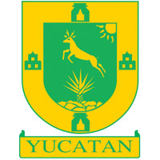

Las elevadas temperaturas, sumadas a la precipitación anual (con su mayor intensidad en verano), dan como resultado un dominio mayoritario del clima cálido subhúmedo con aproximadamente el 85% del territorio estatal, donde la temperatura media anual es de 24°C a 28 °C.El clima semiseco muy cálido y cálido se distribuye en una franja prácticamente paralela a la costa, que va, aproximadamente, desde el oriente de Río Lagartos hasta Dzilam de Bravo, Hunucmá y Celestún; cubre una zona de alrededor del 13% del estado y tiene una temperatura media anual que varía, por lo general, entre los 24 °C y 26 °C, aunque en algunas partes suele ser mayor a los 26 °C, y la precipitación total anual va de menos de 600 a 800 mm. Este régimen de temperaturas relativamente elevadas es atemperado por los vientos alisios que normalmente dominan en la región, producidos por un sistema isobárico que permite el flujo de viento de las zonas tropicales hacia el ecuador terrestre. Gracias a estos vientos, en la península de Yucatán es posible refrescar la geografía durante las épocas más cálidas del año, los meses estivales, sobre todo durante las últimas horas de la tarde, cuando predominan tales vientos soplando del nordeste al sudoeste. En el estado se han registrado 457 especies de peces, 38 de ellas correspondientes a elasmobranquios y 419 a teleósteos;En el estado se han registrado 457 especies de peces, 38 de ellas correspondientes a elasmobranquios y 419 a teleósteos;aunque se tiene pocos estudios relativos a los anfibios se han reconocido 18 especies, representadas en 2 órdenes, 7 familias y 13 géneros; los mamíferos de Yucatán están incluidos en 12 órdenes, 30 familias, 74 géneros y 89 especies, que representan el 17% del total de especies mamíferas en México,por otra parte, los mamíferos acuáticos residentes en los ambientes hidrográficos del estado se distribuyen en cuatro grupos: cetáceos, sirénidos, pinnípedos y mustélidos, sumando alrededor de 30 especies. Se estima que la diversidad de plantas vasculares de la entidad está representada por 1402 especies, lo que significa el 5,84% del total nacional. La gastronomía yucateca tiene características que la hacen diferente a la del resto de México y ha sido calificada de tener una de las gastronomías más completas. Los condimentos son un fundamento característico, el agua de la región también influye y desde luego los ingredientes mismos son determinantes en el gusto de los platillos de Yucatán. Estos tienen influencia de la cocina original maya, sobre todo el vínculo con el maíz que fue la base de la alimentación del pueblo maya.
